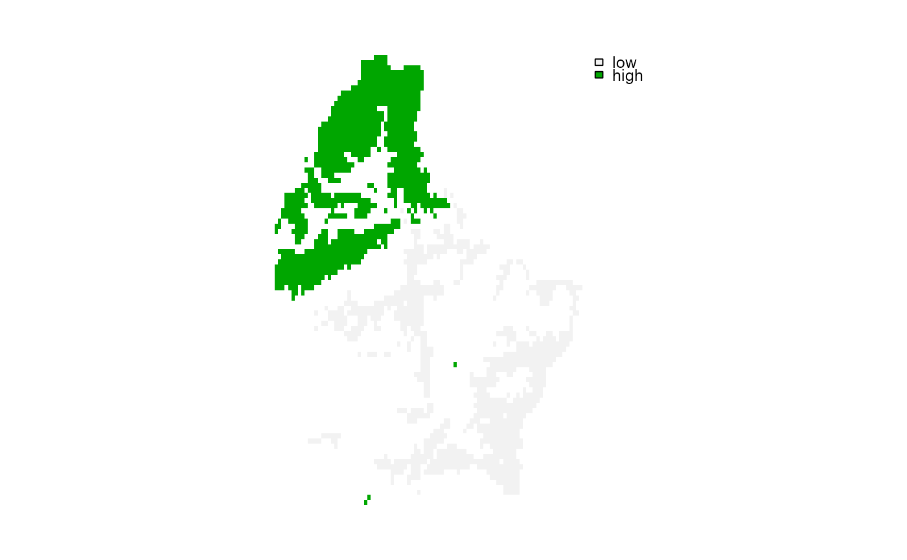

select cells with high or low values
selectHigh.RdIdentify the cells that have the n highest or lowest values in the first layer of a SpatRaster.
With ties="first" (the default), exactly n cells are selected; ties are broken by choosing the smallest cell numbers. With ties="all", all cells that have one of the n highest or lowest values are selected, so the number of TRUE cells can be larger than n when there are ties (as is common with integer data).
Usage
# S4 method for class 'SpatRaster'
selectHighest(x, n, low=FALSE, ties="first", filename="", ...)Arguments
- x
SpatRaster. Only the first layer is processed
- n
positive integer. The number of highest or lowest values to select
- low
logical. If
TRUE, the lowest values are selected instead of the highest values- ties
character. Either
"all"to select all cells that have one of thenhighest or lowest values (the number of cells can be larger thannwhen there are ties), or"first"to select exactlyncells, breaking ties by choosing the smallest cell numbers- filename
character. Output filename
- ...
additional arguments for writing files as in
writeRaster
Examples
f <- system.file("ex/elev.tif", package="terra")
r <- rast(f)
x <- selectHighest(r, 1000)
y <- selectHighest(r, 1000, TRUE)
m <- merge(y-1, x)
levels(m) <- data.frame(id=0:1, elevation=c("low", "high"))
plot(m)
